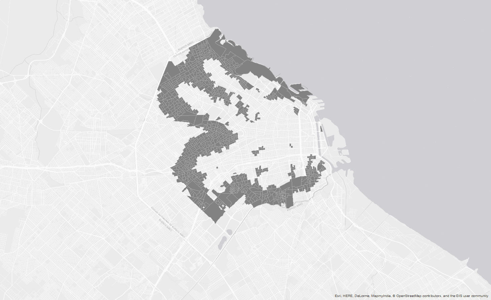
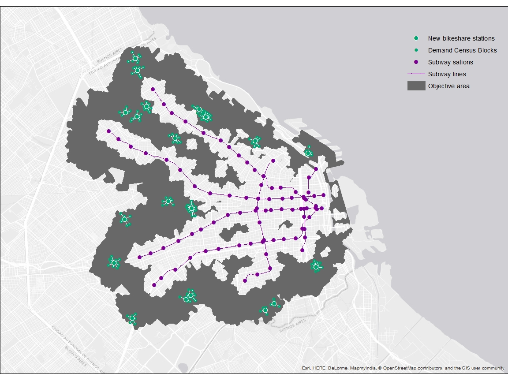

Buenos Aires City is the capital and largest city of Argentina (almost 3 million inhabitants). The Greater Buenos Aires conurbation constitutes the fourth-most populous metropolitan area in the Americas, with a population of around 17 million. The subway is the most popular (near 30 million users monthly) and fastest (26 minutes average time from the peripheral terminals to Downtown) mode of transit. Nevertheless, the subway network is not so well spread. This leaves zome areas of the city poorly connected to downtown. As many cities, Buenos Aires has a bike-share system called Ecobici with 179 thousands registered users. It is totally free of charge and has more than 83 stations. At the same time, the city has one of the most extended network of protected and exclusive bike-lanes (158 km) that makes Buenos Aires the 14th most bikeable city in the world according to copenhagenize.org. Evenso, bike-share stations are located in the downtown area, in competition rather than cooperation with the subway. We propose to deploy bike-share stations in the peripherals areas as a way to improve access to the subway network in a smart, flexible, low-cost and environmentally friendly way. The main idea is for people living close (but not close enough to walk) to a subway station, can bike to the subway and from there to work.We assumed that all of the subway stations would have a bike-share station on the entrance.
Some areas in Buenos Aires are relatively close to subway lines, but not close enough for people to walk there. We though that bike-share could be used to fill this gap, as a multimodal transport option for the daily commute. So, we wanted to come up with the best locations for new bike-share stations in areas that are close enough to subway stations that people could bike to them, but not close enough that people would walk.
The map shows the subway lines and stations (in orange) together with the current bike-share stations (in blue). We can see that both are concentrated around the downtown area. The new bike-share stations that we propose (in cyan) are located in the peripheral areas. You can click on any of the stations to see wich stations it is.
Each new bike-share station has a service area (in spring green). We used census blocks (the smallest spatial unit that the census gives information for). You can see the improvement in commute trip time in minutes based on the opacity of the color. You can also see mostre clearly those services areas where the improvement is higher. You can click on any block to check the total commute time improvement.
Finally, we estimated the time it takes to walk from home to the new bike-share station (actually from the census block centroid). And also, how much time it takes to bike from the new bike-share station to the nearest subway station. You can click on any of the paths to check the estimated time.
The example map shows an area in Villa Crespo, a neighborhood in Buenos Aires City relatively close to two subway Lines (A and B). You can see two new bike-share stations with the corresponding service area. For one of this areas, the improvement would be homogeneously high, while the other shows different levels of improvement. From each of the census blocks, we show in a light cyan dashed line, the path to the bike-share station. Then we show in a dark cyan dashed line the biking path to the nearest subway station. Click on any of those features to see each of the times and improvements.
This is the full map for 20 new bike-share stations. You can zoom-in on any area of your interest.
We knew that some areas in Buenos Aires (like Villa Crespo) were relatively close to subway lines, but not close enough for people to walk there. We though that bike-share could be used to fill this gap, as a multimodal transport option for the daily commute. So, we wanted to come up with the best locations for new bike-share stations in areas that are close enough to subway stations that people could bike to them, but not close enough that people would walk.
First, we had to know the areas of the city already served by a subway station. The area that people would walk to subway, so we can exclude those walkable areas from ou analysis as possible areas where the new bike-share station could be located. But, we didn't want to set the stations too far away that people wouldn't even think about biking to the subway stations. So we had to come up with some bikeable area where it would actually make sense to put a new bike-share station.
We could do this using simple buffer areas around subway stations with some radius for walkable area and another for bikeable area. Instead, we choose to use network analysis. This means that we compute the actual distance that people would walk or bike along the streets or sidewalks. This is better than using some fictional straight distance that would imply that people would fly to the subway station. For example, in Villa Crespo, there is a huge park called Parque Centenario. People not necessarily can walk straight through the park. The same can be said for the areas of Colegiales and Palermo neighborhoods where there are railroad tracks impeding the passage.
We used service area in Network Analysis to come up with buffer areas for:
This is was the process. In cyan the bikeable area. In yellow the walkable area. At the end, we can see the final bikeable but not walkable area that is our area of interest.
Within the bikeable but not walkable area to the subway we used Location Allocation maximizing attendance to come up with ideal locations for the new bike share stations
For weights in the Location Allocation we use, for each census block, the sum of:
We evaluated the new time it takes combining bike and subway using Google API Distance Matrix. The code is in this project here . Google didn't implemented bike as a mode of transit, so we estimated a average velocity of 10 km/h using a study carried in Lyon, France.
Combining bikeshare and subway in the commute reduces trip time by:
| Statistic | Reduction in minutes | Reduction in % |
|---|---|---|
| Mean | 6:48 | 15,0 % |
| 1Q | 9:11 | 22,8 % |
| Median | 5:16 | 12,7 % |
| 3Q | 2:43 | 6,4 % |
This is the resulting map the the BA Commute time project. The map shows the commute time in minutes to downtown. Black areas are those poorly connected to downtown, so a transfer is needed (bus-subway or two buses).